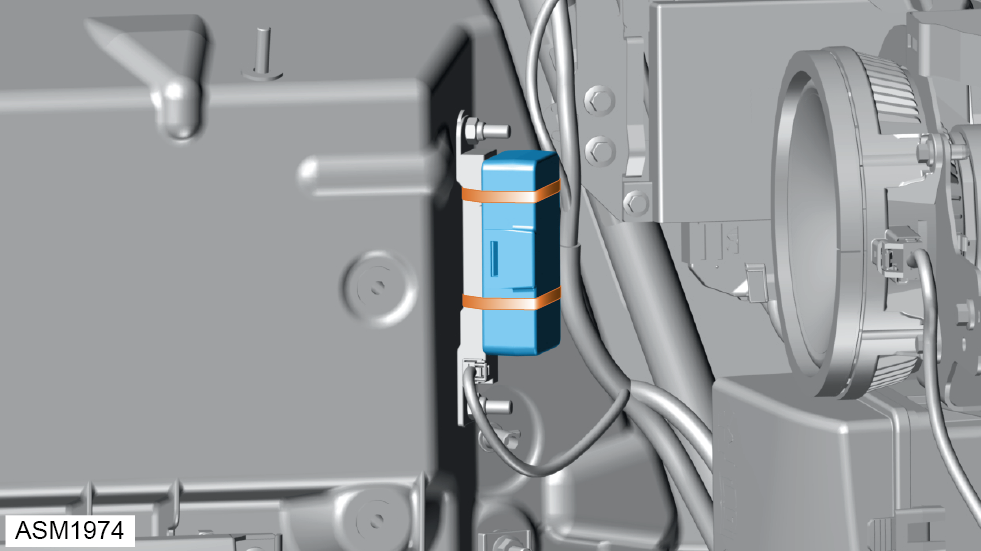
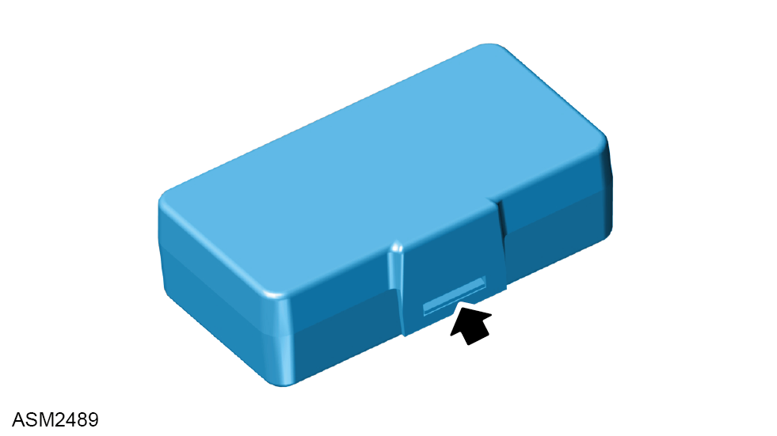
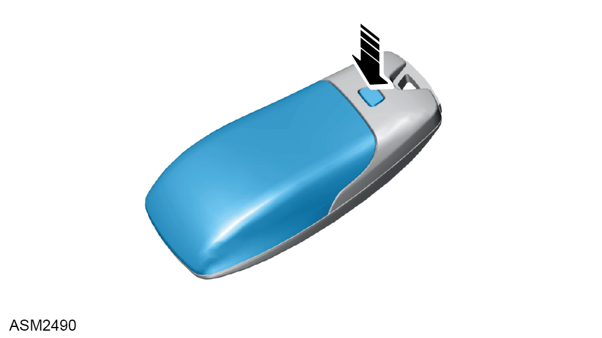
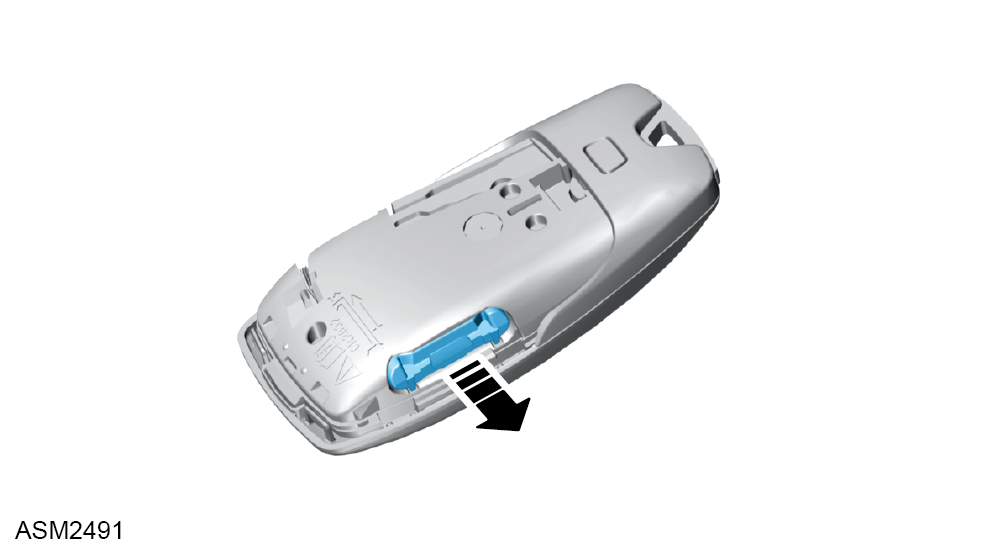

Module - Key - 4 Cylinder
Print
Operation Code: 17.33.30-02
Removal
- Remove rear quarter trim. Refer to procedure.

- Remove and discard cable ties (x2) securing key module to antenna.
- Remove key module.

- Release clip securing cover to key module.
- Open cover.
- Remove keyfob.

- Press button to release rear cover from keyfob.
- Remove cover.

- Pull out battery holder.
- Remove CR2032 coin cell battery.
Installation
- Installation is the reverse of removal procedure except for the following:
- Install new CR2032 coin cell battery.
- Renew discarded cable ties.
- After installation perform a diagnostic read and clear error memory using Lotus Insight tool.
NOTE: Register module using Lotus Insight tool.